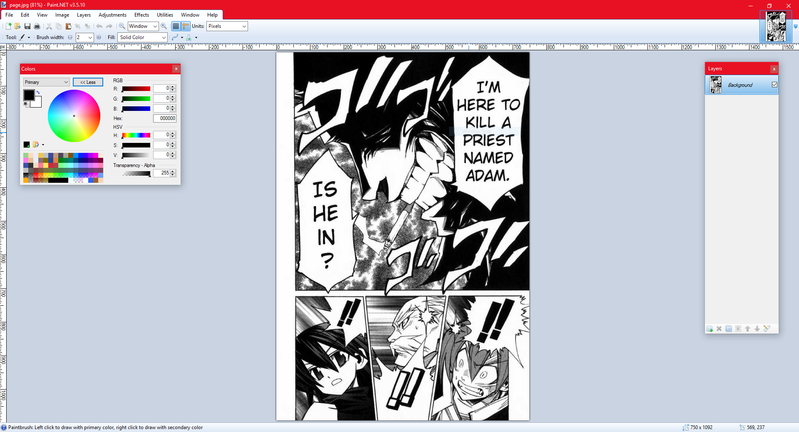
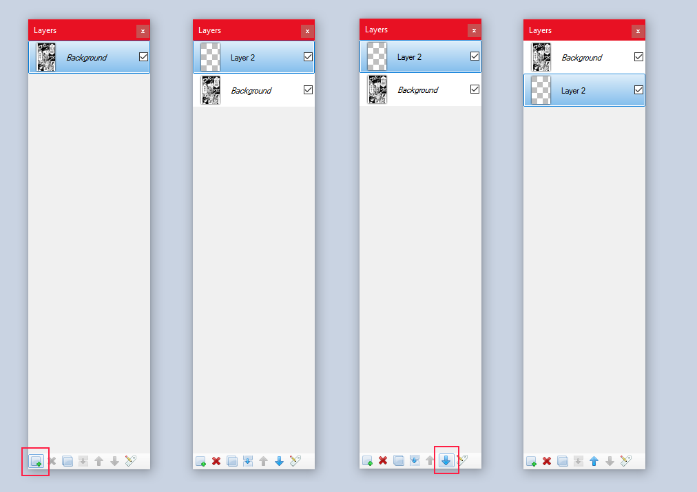
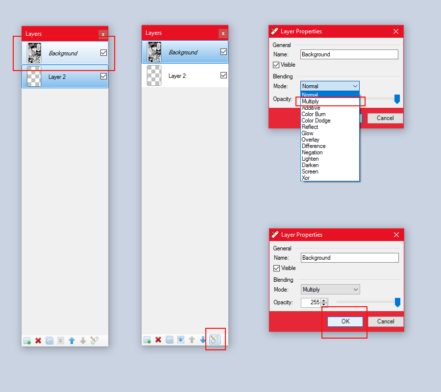

I used to do scanlation work on manga as a hobby. If you
have never come across that term, "scanlation" essentially refers to scan translation
wherein an individual would take raw scans of manga released in Japan and translate the
text to their native language, meanwhile editing this image to better suit this re-release.
If you would like to know more about this process and the steps involved, there is a
tutorial for it right here. In this guide, however,
I am going to talk about how to effectively digitally color a page of pre-scanlated manga.
The Tools
The most important thing we need is an image editor that
supports layering and anti-aliased drawing. This is a very common compliment to almost
any editor more advanced than Paint, but here are some good options if you are unsure of
what to pick:
Paint.NET
- Free, open source, supports Windows (My personal recommendation)
GIMP
- Free, open source, supports Linux / Mac / Windows
Illustrator
- Paid, Adobe software (Definitely the best option if you can obtain it)
For this guide I will be using Paint.NET, but the tools and
methods I will be using exit in every one of these softwares in a very similar form.
Since we will be drawing, usually rather finely, I find it
extremely useful to use a drawing tablet. Nothing to fantastic; I myself own a
Wacom Intuos 4 tablet, which has done a beautiful job for as long as I have owned it. A
well sized and comfortable drawing tablet runs anywhere from $100 to $1,000, depending on
your choice of brand, size, and type. If you don't have one, it's fine; a mouse will
work, just not as well.
The Manga
We want to use a nice, clean page of manga in which we can
focus on adding some color as opposed to having to straighten or color-correct the scan.
Thus, we want to use "cleaned" manga. The best way to get this is to look at any popular
online manga site; English translated manga is always cleaned beforehand and will provide
us with the best canvas to work with.
KissManga is a good place to get content;
for this guide, I will be using
this
specific page. Again, any cleaned page will do; I chose this one chiefly because it was
not too busy.
The Process
First, we open our image in our editor of choice. Here I
used Paint.NET.

Our goal is to create a nice wireframe so that we can easily
color in between the lines of the existing image. This can be accomplished by creating a new
blank layer and positioning it underneath this current background.

In order to get the wireframe effect, we want to have any color we
add to this new layer to be visible through the whites of the top layer, but not through the blacks.
We do this by setting the blending mode of the topmost layer to "Multiply".

That's all there is too it. You can now draw on the blank layer, "layer 2",
and all color will be bounded by the black lining of the "Background" layer. Just grab your pen tool and
off you go.
Tips and Tricks
The rest of this post will just be me coloring this panel,
explaining the methods I use, the reasons for what I do, and the colors I choose. If that's
of interest, read on. Otherwise, be free to doodle as your heart desires.
The first thing I will do is create a more fitting border.
Needless, the series of which this is a part of, is a silly, action packed, and colorful
show. It is my opinion that the manga would be as well, would it have been fully colored
by the author. As such, I want to create a border and makes all the colors of the panel
pop out more. So, I will make it pure black, stretching back the thin borderer lining
of the panel all the way to the edges.
I will use a blank layer below the panel to store my border on.
By making the border on a separate layer, I can move the border layer to the top, right below
the panel layer; this will act like a kind of clipping mask for all coloring done within the
panel.